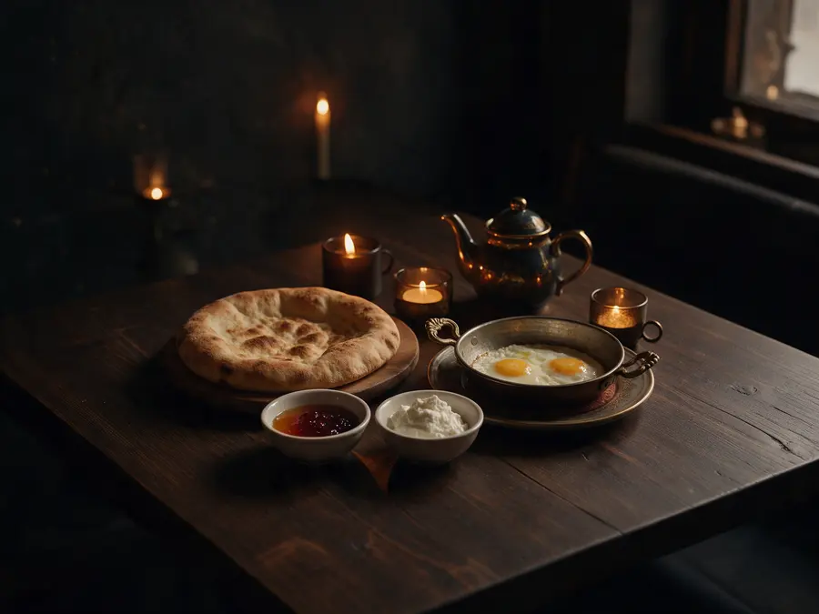
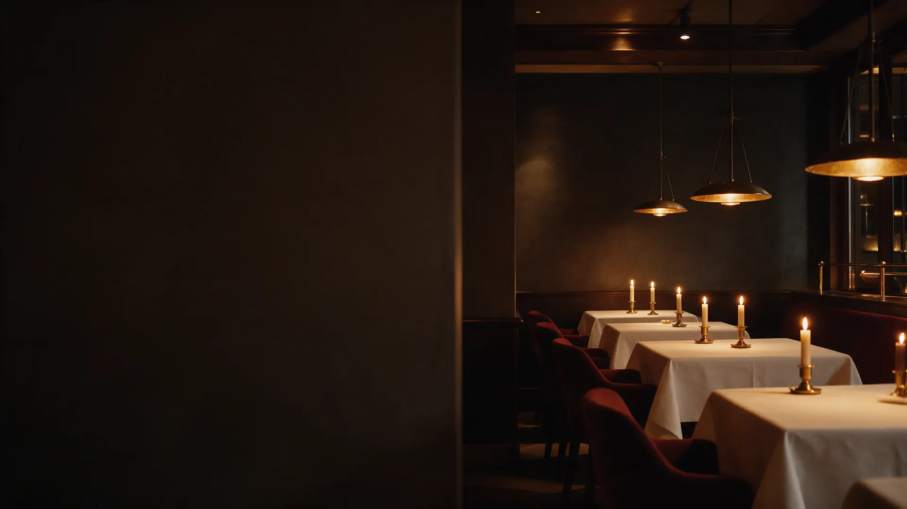
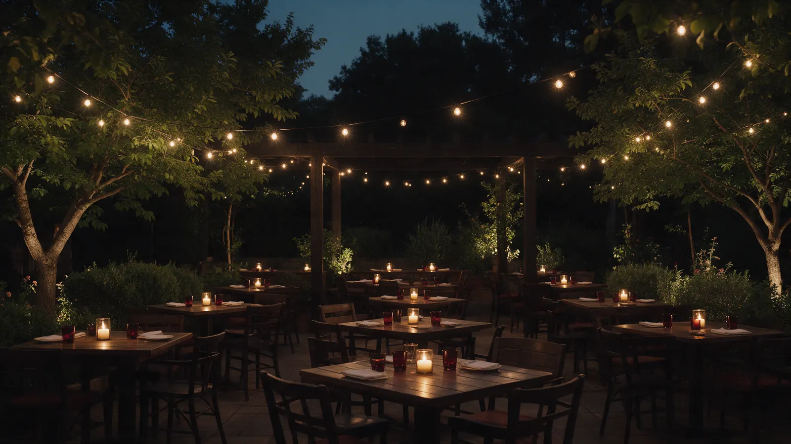

Работаем ежедневно
{{часы}}
Ресторан восточной кухни · {{город}}
Divan
Терраса, сад и два этажа залов. Стол ждёт вас – бронируйте за минуту.
О ресторане
Терраса, сад и два этажа

01Терраса
Летняя терраса под открытым небом: столики среди зелени, тёплый свет гирлянд вечером.
02Сад
Тихий сад вокруг террасы – тень днём и прохлада к ужину.
03Два этажа
Первый этаж – для ужина и разговора, второй – для компании и праздника.
Поэтому
Место под любой повод: тихий ужин в саду, обед на террасе или банкет на втором этаже.
Узнать подробнее
Банкеты
Залы под ваш праздник
{{зал 1}}
Большой зал для свадеб и юбилеев: длинные столы, свой вход, музыка до закрытия.
- Вместимостьдо {{мест 1}} гостей
- Форматбанкет или фуршет
Оставить заявку
Листайте, тапните или свайпните – залы сменятся
{{зал 2}}
Уютный зал для семейного праздника: круглые столы, мягкий свет, свой балкон.
- Вместимостьдо {{мест 2}} гостей
- Форматбанкет или фуршет
VIP-кабинет
Отдельный кабинет с диваном и шторами – для тех, кто хочет поговорить без лишних глаз.
- Вместимостьдо {{мест vip}} гостей
- Форматзакрытый ужин
Забронируйте стол
Напишите в Telegram или позвоните – подтвердим стол в часы работы.
Для банкета назовите дату и число гостей – предложим зал и расчёт.